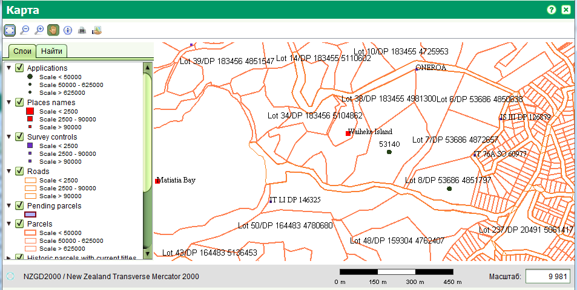
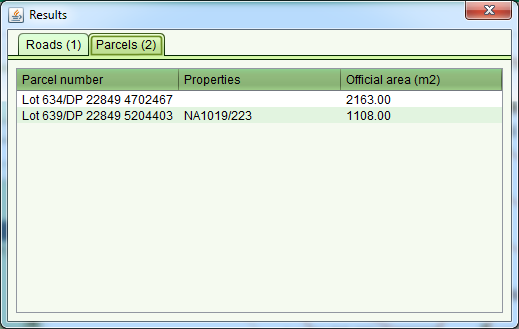

Просмотрщик карты
Просмотрщик карты позволяет просматривать геопространственные данные имеющиеся в SOLA.
Вы можете открыть его из главного меню Карта >Карта или щелкнув на соответствующую кнопку в панели инструментов главного окна


Просмотрщик карты имеет панель инструментов для навигации по карте, получения информации об объектах и две дополнительные вкладки:
- Список слоев для контроля отображения слоев карты.
- Поиск объектов на карте
Панель инструментов содержит следующие инструменты:
- Масштабировать по границам карты

- Уменьшить

- Увеличить

- Переместить

- Информация

- Печать

Просмотрщик карты может содержать также дополнительные инструменты для редактирования и
других пространственных функций (напр. указания расположения заявления).
Эти инструменты подробно описаны в главах "Доступные операции".
Масштабирование карты
Масштаб карты может контролироваться при помощи инструментов увеличения, уменьшения и масштабирования по границам карты.
Также можно ввести требуемый масштаб в поле "Масштаб", расположенном в нижнем правом углу карты. Там же отображается
масштабная линейка для визуального отображения расстояний. Имейте ввиду, что из-за разных разрешений монитора, масштабная линейка
является приблизительной и не должна использоваться для точных измерений на карте.
При движении мышкой по карте, вы можете видеть координаты курсора, отображаемые в нижней части карты.
Слои
Вкладка "Слои" содержит список слоев с геопространственными данными, которые отображаются на карте. Вы можете включить или отключить
отображение слоя на карте используя поле с флажком, расположенным перед каждым слоем.

Щелкнув на треугольнике, расположенном перед именем каждого слоя, вы можете увидеть символы и стили, которые используются для отображения
объектов слоя при различных масштабах.
Например, когда масштаб карты менее 2 500, название мест (Places names) будут отображены большим красным квадратом. Между 2 500 и 90 000, будет
использован квадрат средней величины, и при масштабе свыше 90 000 будет использоваться маленький квадрат.
По умолчанию в SOLA имеются следующие слои:
-
Applications (Заявления) - точки, которые указывают примерное расположение заявлений, которые были зарегистрированы в SOLA и находятся на исполнении.
Точки заявления могут быть нанесены в форме заявления на вкладке "Точки карты".
- Place names (Названия мест) - отображает приблизительное расположение географически значимых мест, таких как города, деревни, заливы и т.д.
- Survey controls (Контрольные точки съемки) - отображает расположение контрольных точек съемки (напр. геодезические маркеры).
- Roads (Дороги) - отображает расположение дорог.
-
Pending Parcels (Временные земучастки) - отображает новые участки, которые были созданы в результате разделение или объединения.
Они будут отображаться на этом слое до тех пор, пока соответствующее заявление не будет одобрено.
- Parcels (Земучастки) - отображает расположение текущих (активных) участков.
-
Historic Parcels with Current Titles (Исторические земучастки с активными объектами недвижимости) - отображает участки, которые были
разделены или объединены, но соответствующие объекты недвижимости и их права собственности все еще являются активными (не ликвидированными).
- Parcel Nodes (Узлы земучастков) - отображает расположение узлов (точек) участков.
- Orthophoto (Аэрофото снимки) - отображает аэрофото снимки.
Список слоев может быть изменен и настроен в соответствии с потребностями агентства по регистрации.

Поиск
Данная функция может быть использован для быстрого поиска участков на карте.
Для этого перейдите на кладку "Поиск" и выберите поле в выпадающем списке "Поиск по" по которому вы хотите найти участок.
Затем начните печатать значение для поиска в текстовом поле. Во время набора значения (начиная с 3-го символа),
система автоматически будет искать подходящие варианты по частичному совпадению со значением поля и отображать их в списке расположенном ниже.
Для перехода к найденному участку дважды щелкните на нем и карта будет автоматически увеличена до месторасположения участка с его выделением.

- Number (Номер) - Для поиска по номеру участка.
- Property number (Номер недвижимости) - Для поиска по номеру (коду) недвижимости. Через объект недвижимости будет найден соответствующий участок.
- Property owner (Владелец) - Для поиска по имени владельца недвижимости. Через объект недвижимости будет найден соответствующий участок.
Пространственный поиск может быть изменен в соответствии с нуждами регистрационного агентства.
Инструмент "Информация"
Инструмент "Информация" используется для получения данных о пространственных объектах, расположенных на карте,
такие как участки, контрольные точки съемки, дороги, населенные пункты и т.д.
По причине того, что пространственные объекты могут находиться близко друг к другу и даже пересекаться, данный инструмент
отображает данные всех объектов в непосредственной близости от места щелчка.
В появившемся всплывающем окне вы можете видеть несколько вкладок, каждая из которых соответствует типу объекта, попавшего в зону щелчка.

Инструмент "Печать"
Инструмент "Печать" используется для распечатки отображаемой карты. Перед печатью, спозиционируйте карту, включите слои, установите нужный масштаб
и нажмите кнопку "Печать". В появившемся окне вы можете выбрать размер бумаги и установить точный масштаб.

При нажатии кнопки "Печать" в диалоговом окне, будет сгенерирована карта для печати, которую вы можете распечатать или сохранить во
внешний формат, такой как PDF, DOCX и HTML.

Смотрите также: